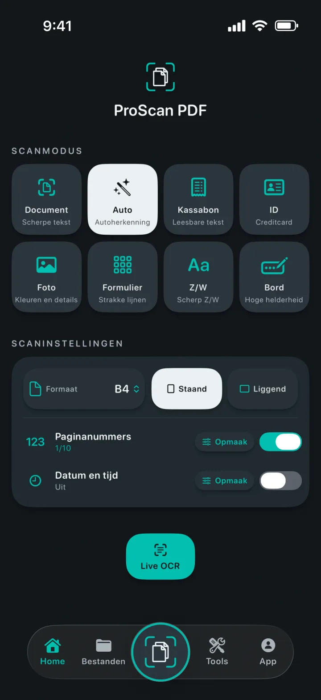
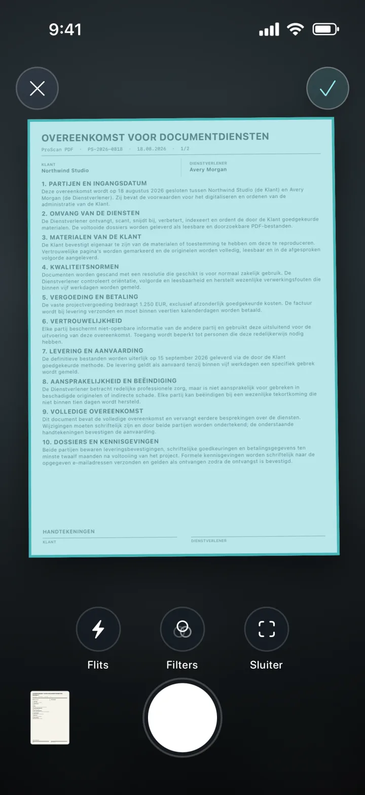
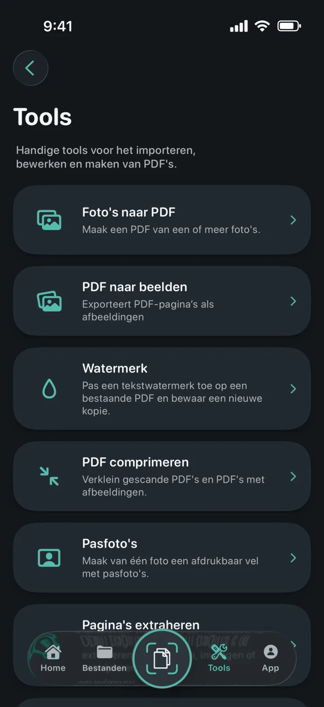
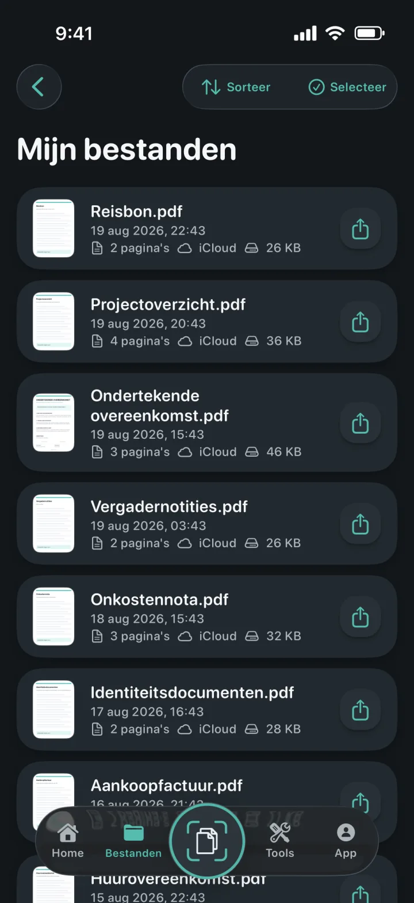
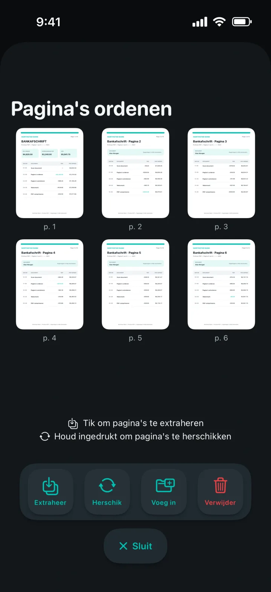
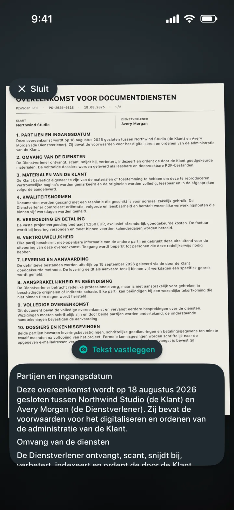

Foto's naar PDF
Maak van één of meer foto’s een verzorgde PDF.
Een scanner die elke pagina begrijpt
Maak van documenten, kassabonnen, identiteitsbewijzen, notities en foto’s verzorgde PDF’s. Bewerk, onderteken, beveilig en deel ze daarna zonder advertenties of watermerken.

Een scanner die elke pagina begrijpt
Kies de juiste modus, breng de pagina in beeld en laat Apple’s documentenscanner de opname verzorgen. Stel vooraf formaat, stand, paginanummers en datum en tijd in.

Al je PDF-tools op één plek
Importeer, converteer, bewerk en maak PDF’s vanuit één overzichtelijke werkplek.

Maak van één of meer foto’s een verzorgde PDF.
Exporteer elke PDF-pagina als beeld en bewaar of deel die.
Voeg een gekleurd tekstwatermerk toe aan een nieuwe PDF-kopie.
Verklein gescande en afbeeldingsgerichte PDF-bestanden.
Snijd bij, controleer en exporteer exacte formaten of afdrukvellen.
Extraheer, orden, voeg in of verwijder PDF-pagina’s.
Maak bewerkbare Word-bestanden en behoud waar mogelijk de lay-out.
Maak doorzoekbare kopieën en vind tekst in de viewer.


Documenten blijven geordend
Lokale kopieën laten de bibliotheek snel openen. Een privéback-up in iCloud helpt je documenten terug te vinden op een ander Apple-apparaat.
Privacy zit in het ontwerp
Scannen, OCR en PDF-verwerking gebeuren lokaal op je apparaat. ProScan PDF uploadt je documenten niet naar eigen servers.
Lees het privacybeleidOCR en doorzoekbare documenten
Leg tekst live vast, haal bewerkbare inhoud uit scans of maak doorzoekbare PDF-kopieën. Alles wordt verwerkt op je iPhone of iPad.

Ontworpen voor jou
Elk thema verandert de interface van de app en biedt een bijpassend beginschermicoon.
Scannerturkoois en papierwit op grafiet.
Elektrisch cyaan en violet op diepzwart.
Heldere blauwe bediening op een lichte papierlaag.
Koraal, violet en mint op zacht antraciet.
Champagne en zachtroze op verfijnd nachtblauw.
Koel zilver en gepolijst goud op grafiet.
Warm crème en terracotta op diep bosgroen.
Beschikbaar in het Engels, Duits, Spaans, Frans, Italiaans, Nederlands, Pools, Braziliaans-Portugees, Europees-Portugees, Turks, Vereenvoudigd Chinees, Japans, Koreaans en Hindi.
Vragen, beantwoord
Duidelijke informatie over privacy, opslag en wat je met ProScan PDF kunt doen.
Nee. ProScan PDF toont geen advertenties en voegt geen watermerken toe aan gescande documenten.
De belangrijkste scan-, OCR- en PDF-tools werken op je apparaat en zijn offline te gebruiken. Voor iCloud-back-up en delen is een netwerkverbinding nodig.
Documenten blijven voor snelle toegang in de lokale bibliotheek van de app. Als iCloud beschikbaar is, kunnen privékopieën in je iCloud-account worden opgeslagen.
Foto's naar PDF, PDF naar beelden, watermerken, compressie, pasfoto’s, pagina-extractie en -ordening, PDF naar Word, doorzoekbare PDF’s, samenvoegen, ondertekenen en wachtwoordbeveiliging.
Je krijgt elke dag drie gratis scans. Pro ontgrendelt onbeperkt scannen en alle Pro-tools.